OpenAI编程助手插件，把Codex装进VSCode！
原文：https://mp.weixin.qq.com/s?__biz=MzAwMzIzOTk5OQ==&mid=2247536883&idx=1&sn=8fbf4b133e87049cdab88571807027ea&chksm=9b3c29a3ac4ba0b57dbd5503c4321a063e2c559dc9ac15ab2d4a7583e6a70f004b8d9ad2360d#rd 合集：AI时代，不用就会被淘汰
写在前面
现在的生信领域没AI已经完全无法干活了。西柚云结合大家对AI编程以及日常运行任务时的实际需求，推出了AI无缝接入Rstudio≈言出法随帮助大家做到在Rstudio中直接调用AI进行对话、代码修改、代码注释，结合分析环境（足够支持你完成硕博生涯的共享服务器）。几乎能做到数据分析的言出法随，反馈的代码直接就能在Rstudio里跑。
今天为大家分享：如何在VSCode中通过Codex插件实现AI辅助编程，覆盖本地与远程 两种使用场景。无需依赖命令行，直接在 IDE 中通过插件即可便捷使用 Codex。使用过程中有任何问题欢迎联系：

本地使用
安装Codex插件
- 打开VSCode，本地安装Codex插件（认准openai）
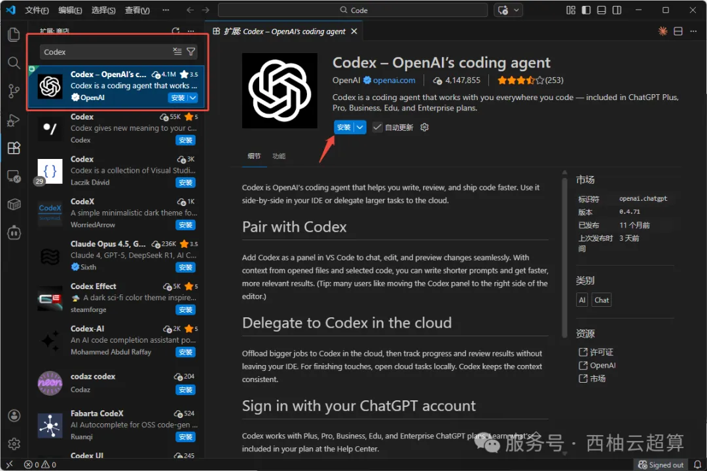
- 安装完成后，右侧活动栏会出现Codex图标
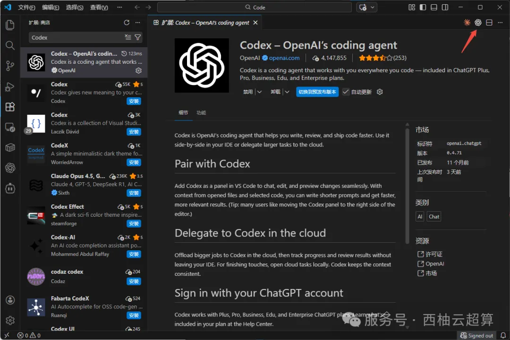
- 此时点击图标会出现下图界面，由于还未进行环境配置，无法正常使用，我们需要根据后面的教程进行环境配置
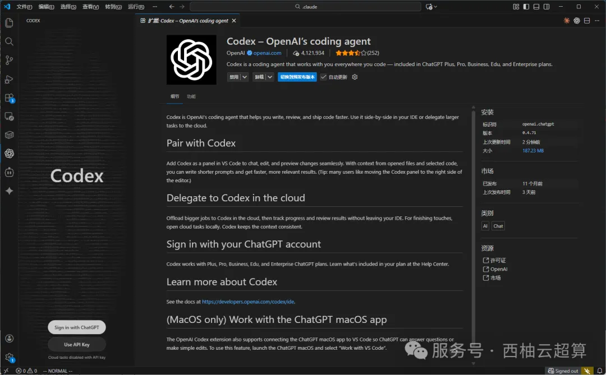
配置环境
- 新建auth.json文件
Windows用户需要在C:\Users\你的用户名\.codex\目录新建auth.json文件，填入下面的内容
{
"OPENAI_API_KEY": "你的API_KEY"
}
- 新建config.toml文件
依旧在C:\Users\你的用户名\.codex\目录新建config.toml文件，填入下面的内容，配置URL
model_provider = "xiyou"
model = "gpt-5.2-codex"
model_reasoning_effort = "xhigh"
disable_response_storage = true
preferred_auth_method = "apikey"
[model_providers.xiyou]
name = "xiyou"
base_url = "https://api.0daysci.com/v1/"
wire_api = "responses"
- 保存之后重启VSCode，即可调用成功
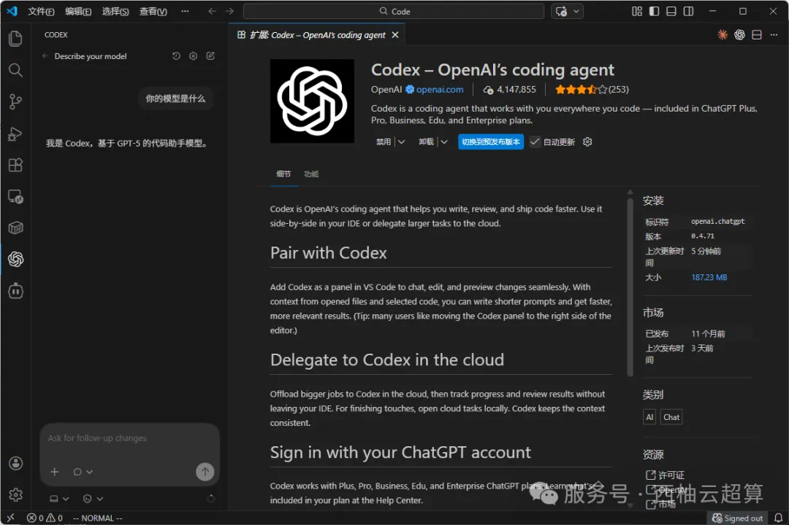
服务器使用
使用VSCode连接远程服务器
先按照教程通过VSCode连接服务器：手把手教你用VS Code连接服务器
安装Codex插件
- 在VSCode左侧扩展图标搜索Codex并安装，认准openai。
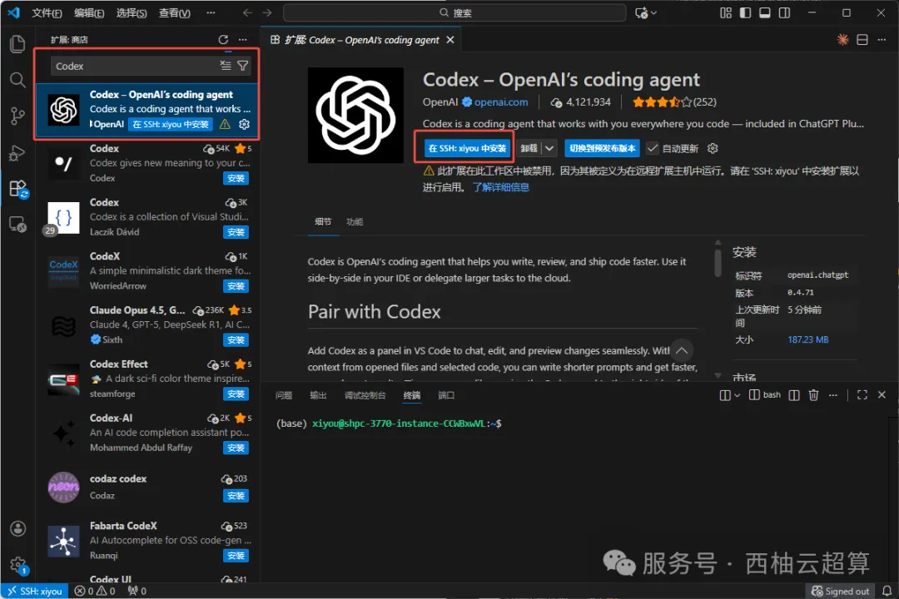
- 此安装是在远程主机上安装，安装完成之后会显示已在远程主机启用扩展，且右侧活动栏出现Codex图标
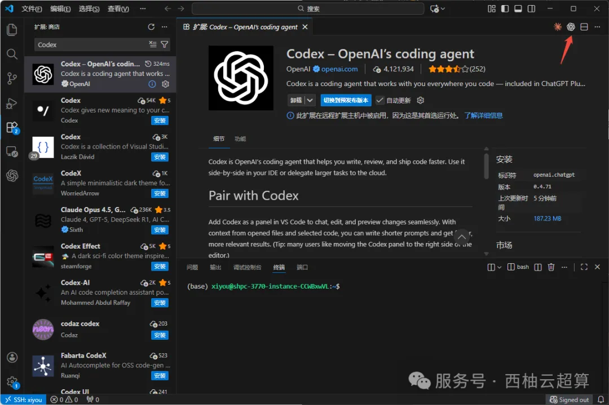
- 和本地使用类似，如果未进行环境配置会无法正常使用，服务器使用时依旧需要根据后面的教程进行环境配置
配置环境
- 在远程服务器创建配置文件
# 创建配置目录
mkdir ~/.codex
# 配置KEY
vim ~/.codex/auth.json
{
"OPENAI_API_KEY": "你的API_KEY"
}
# 配置URL
vim ~/.codex/config.toml
model_provider = "xiyou"
model = "gpt-5.2-codex"
model_reasoning_effort = "xhigh"
disable_response_storage = true
preferred_auth_method = "apikey"
[model_providers.xiyou]
name = "xiyou"
base_url = "https://api.0daysci.com/v1/"
wire_api = "responses"
- 保存后重启VSCode，再次打开即可使用。
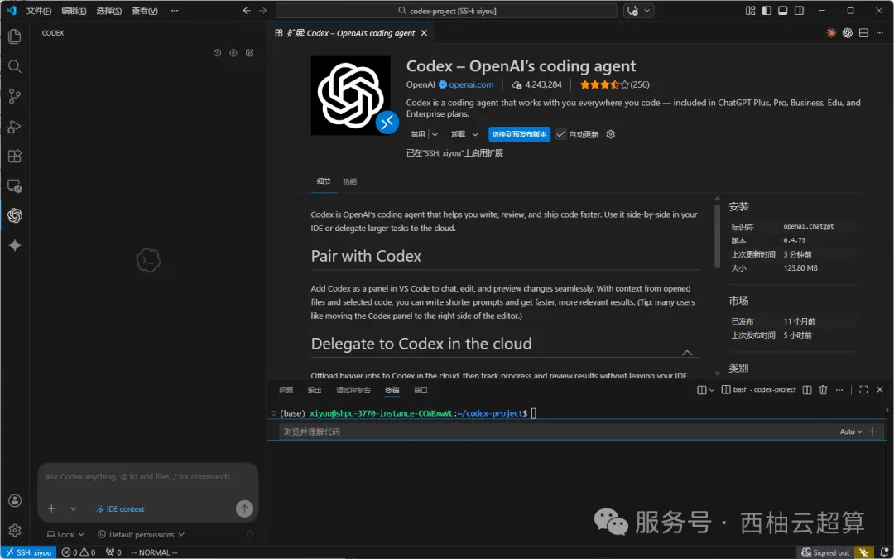
使用测试
- 点击右侧Codex图标或者左侧活动栏打开对话框
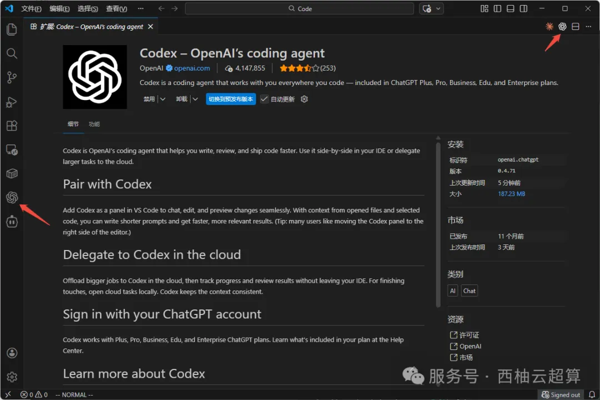
- 直接描述任务，例如："请生成一个R脚本，使用DESeq2对一个假想的表达矩阵进行标准化，并输出前10个最差异表达的基因"
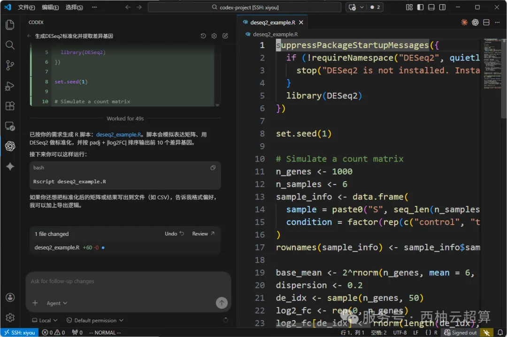
怎么购买Token
打开西柚云AI服务平台
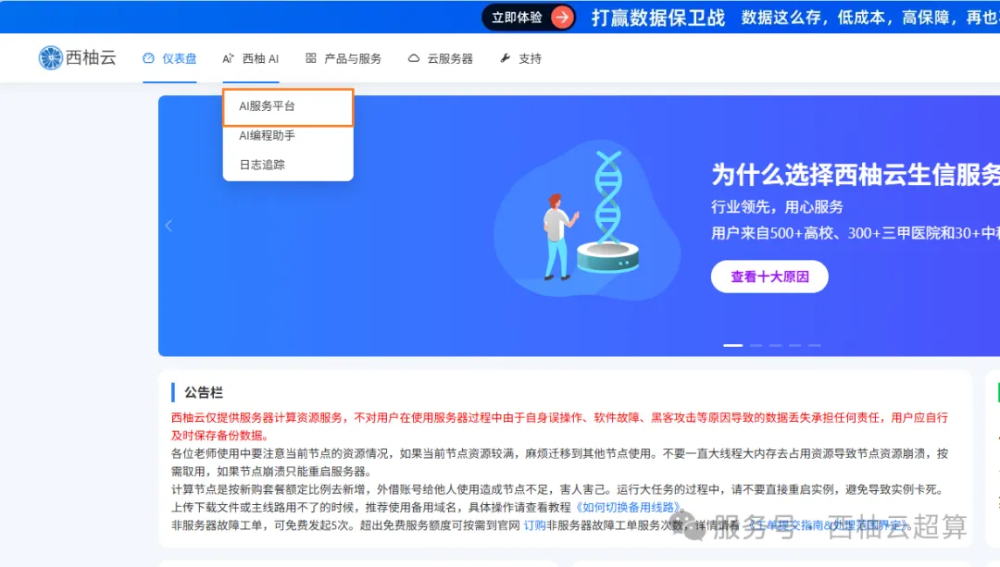
充值
- 点击右上角个人中心，点击钱包管理。
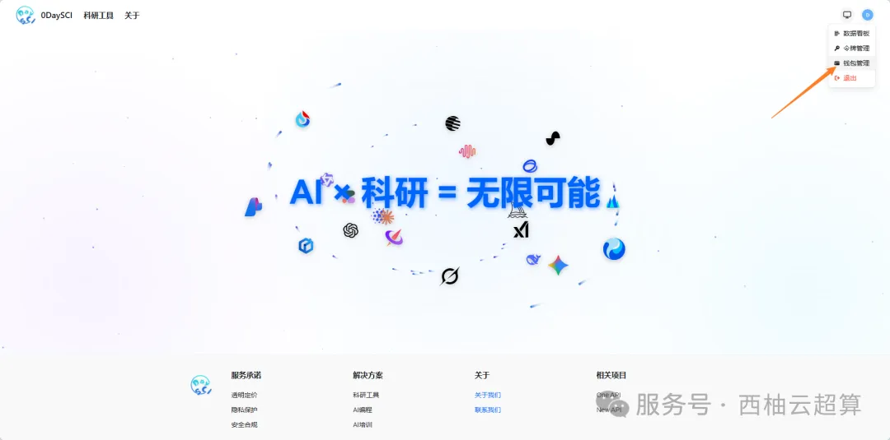
-
点击跳转购买对应的商品，购买后系统将自动充值Token。
-
免费体验版：5百万Token。
- 正式版：1千万Token/18元。
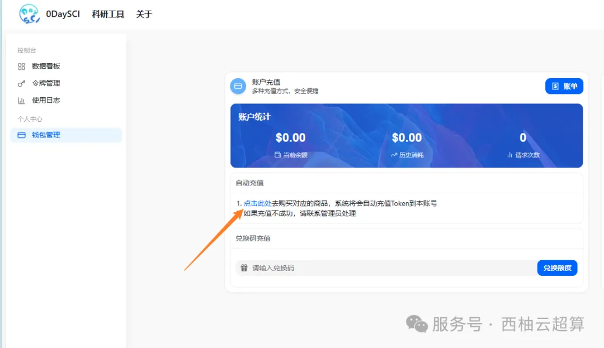
令牌管理
- 进入令牌管理
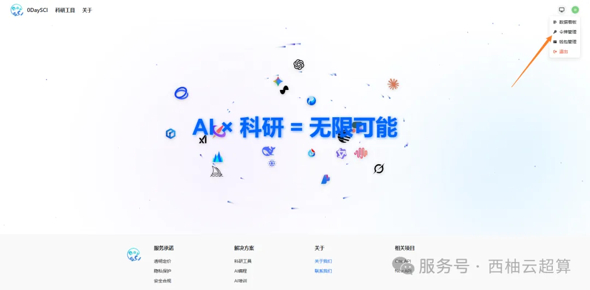
-
创建令牌
-
名称：填便于自己识别的名称
- 令牌分组：选择默认分组
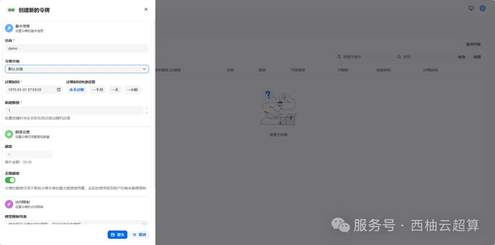
- 复制令牌配置到对应的配置文件
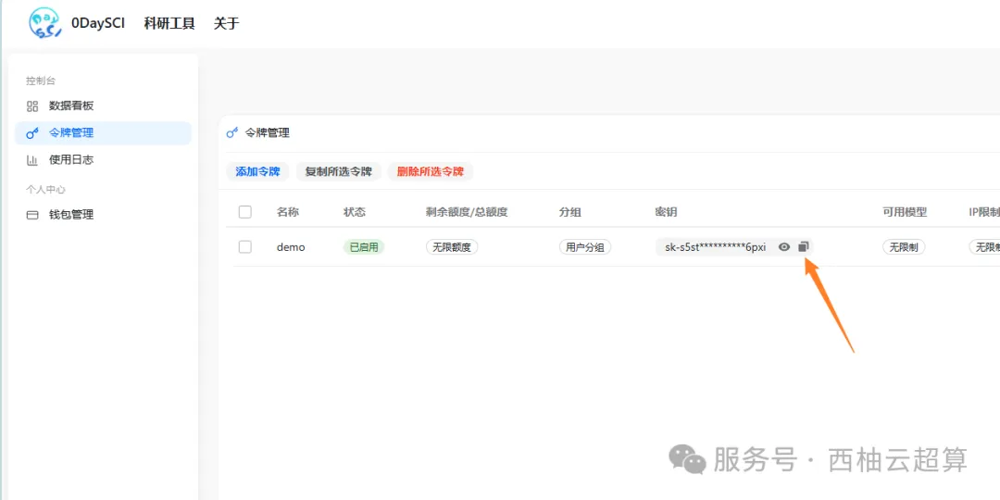
西柚云在售算力
我们长期提供GPU、CPU算力，欢迎大家联系客服微信[Biomamba_zhushou]优惠下单。


如何联系我们

 留一个领取资料、开箱即用的单细胞分析镜像的微信号[Biomamba_zhushou]，方便各位随时交流。同时我们也构建了交流群矩阵，欢迎大家入群讨论。
大家可以阅读完这几篇之后添加给生信入门初学者的小贴士
没有检索，就没有发言权
留一个领取资料、开箱即用的单细胞分析镜像的微信号[Biomamba_zhushou]，方便各位随时交流。同时我们也构建了交流群矩阵，欢迎大家入群讨论。
大家可以阅读完这几篇之后添加给生信入门初学者的小贴士
没有检索，就没有发言权
已有生信基地联系方式的同学无需重复添加

 您点的每个赞和在看，我都认真当成了喜欢
您点的每个赞和在看，我都认真当成了喜欢